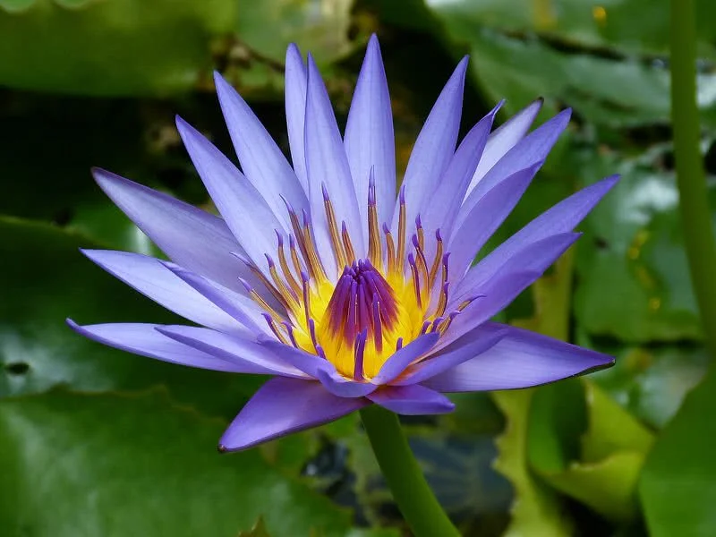

Flores são plantas com uma beleza surreal, porém você conhece alguma de suas epécies mais belas espalhadas pelo mundo?
Super aromática, a cravina é uma planta que encanta não somente pela beleza que proporciona, mas também pela facilidade no cultivo e adaptação a diferentes estações do ano. Mas será que deve ser difícil de plantá-la? Ela gosta mais de sol ou sombra?
Além das flores agradáveis aos olhos, as folhas grandes que flutuam acima da superfície da água são outra coisa notável sobre os nenúfares. Eles também têm um caule longo que se prende ao fundo da lagoa ou lago em que a planta habita
Lótus é uma das belas flores aquáticas encontradas em águas rasas e turvas. Eles não podem sobreviver no clima frio. Lótus precisa de pleno sol para um crescimento saudável. Esta flor sensível à luz abre de manhã e fecha à noite.
>